8 JAGS – Just Another Gibbs Sampler
This chapter focuses on a very simple model – one for which JAGS is overkill. This allows us to get familiar with JAGS and the various tools to investigate JAGS models in a simple setting before moving on to more interesting models soon.
8.1 What JAGS is
JAGS (Just Another Gibbs Sampler) is an implementation of an MCMC algorithm called Gibbs sampling to sample the posterior distribution of a Bayesian model.
We will interact with JAGS from within R using the following packages:
- R2jags – interface between R and JAGS
- coda – general tools for analyzing and graphing MCMC algorithms
- bayesplot – a number of useful plots using
ggplot2 - CalvinBayes – includes some of the functions from Kruschke’s text and other things to make our lives better.
8.1.1 JAGS documentation
You can find JAGS documentation at http://people.stat.sc.edu/hansont/stat740/jags_user_manual.pdf. This can be useful if you need to find out particulars about things like the distributions that are availble in JAGS.
8.1.2 Updating C and CLANG
Based on limited testing, it appears that things are good to go and you should not need to do this.
To use the newest versions of JAGS, Stan, and the R packages that accompany
them, we need to use a newer version of some software than is standard for
<rstudio.calvin.edu>. I have taken care of this at the system level,
and that may suffice, but if things don’t work in your account,
take the following steps:
Open a terminal with Tools > Terminal > New TerminalCopy-and-paste this into the terminal window.
echo "source scl_source enable devtoolset-7 llvm-toolset-7" >> ~/.bashrcThis tells the server to use a newer version of C++ and CLANG.
Close the terminalRestart R with Session > Restart R
You should only need to go through these steps once.
8.2 Example 1: estimating a proportion
8.2.1 The Model

That is \[\begin{align*} Y_i &\sim {\sf Bern}(\theta) \\ \theta &\sim {\sf Beta}(a, b) \end{align*}\]
8.2.2 Load Data
The data sets provided as csv files by Kruschke also live in the CalvinBayes
package, so you can read this file with
library(CalvinBayes)
data("z15N50")
glimpse(z15N50)## Observations: 50
## Variables: 1
## $ y <dbl> 0, 1, 0, 0, 0, 0, 0, 0, 0, 0, 1, 0, 0, 0, 1, 1, 1, 0, 0, 1, 0,…We see that the data are coded as 50 0’s and 1’s in a variable named y.
(You should use better names when creating your own data sets.)
8.2.3 Specify the model
There are at least three R packages that provide an interface to JAGS: rjags, R2jags, and runjags. We will primarily use R2jags. Kruschke primarily uses rjags. The main advantage of R2jags is that we can specify the model by creating a special kind of function. 6 The avoids the need to create temporary files (as rjags requires) and keeps things tidier in our R markdown documents.
The main part of the model description is the same in either style, but notice
that the using the function style, we do not need to include model{ ... }
in our description. Here’s how we describe our simple model.
bern_model <- function() {
for (i in 1:N) {
y[i] ~ dbern(theta) # each response is Bernoulli with fixed parameter theta
}
theta ~ dbeta(1, 1) # prior for theta
}Some things to note:
dbern()anddbeta()are JAGS functions. The JAGS distribution functions are similar to, but not identical to the ones in R. (R doesn’t have Bernoulli at all, for example.) Sometimes the parameterization are different. Importantly, JAGS doesn’t have named arguments, so the arguments must go in the order JAGS requires. Notice that we are only giving the distribution name and its parameters. (So the first argument that R requires is not part of this in JAGS.)JAGS is also not vectorized the way R is, so we will need to write some explicit for loops to say “do this to every that”. In the example above, the for loops says that for each row of the data (
i in 1:N), the response (y[i]) is Bernoulli with paramter \(\theta\) (dbern(theta)).
8.2.4 Run the model
R2jags::jags() can be used to run our JAGS model. We need to specify
three things:
(1) the model we are using (as defined above),
(2) the data we are using,
(3) the parameters we want saved in the posterior sampling.
(theta is the only parameter in this model,
but in larger models, we might choose to save only some of the parameters).
The data do not need to be in a data frame, and this usually means a bit
more work on our part to tell JAGS things like how much data there is.
We will prepare all the information JAGS needs about the data in a list
using list().
There are some additional, optional things we might want to control as well.
More on those later. For now, let’s fit the model using the default values
for everything else.
# Load the R2jags package
library(R2jags)
# Make the same "random" choices each time this is run.
# This makes the Rmd file stable so you can comment on specific results.
set.seed(123)
# Fit the model
bern_jags <-
jags(
data = list(y = z15N50$y, N = nrow(z15N50)),
model.file = bern_model,
parameters.to.save = c("theta")
)## module glm loaded## Compiling model graph
## Resolving undeclared variables
## Allocating nodes
## Graph information:
## Observed stochastic nodes: 50
## Unobserved stochastic nodes: 1
## Total graph size: 53
##
## Initializing modelLet’s take a quick look at what we have.
bern_jags## Inference for Bugs model at "/var/folders/py/txwd26jx5rq83f4nn0f5fmmm0000gn/T//RtmpJHPT4z/modelcb2574ecfdf8.txt", fit using jags,
## 3 chains, each with 2000 iterations (first 1000 discarded)
## n.sims = 3000 iterations saved
## mu.vect sd.vect 2.5% 25% 50% 75% 97.5% Rhat n.eff
## theta 0.308 0.064 0.191 0.261 0.306 0.351 0.435 1.001 3000
## deviance 62.089 1.395 61.087 61.186 61.571 62.459 65.770 1.001 3000
##
## For each parameter, n.eff is a crude measure of effective sample size,
## and Rhat is the potential scale reduction factor (at convergence, Rhat=1).
##
## DIC info (using the rule, pD = var(deviance)/2)
## pD = 1.0 and DIC = 63.1
## DIC is an estimate of expected predictive error (lower deviance is better).Some notes on the output above:
3 chains: The Gibbs sampler was run 3 times with 3 different starting values. Each chain ran for 2000 steps, but only the last 1000 steps were saved.n.sims = 3000(1000 in each of 3 chains).mu.vect: We see that the average value ofthetain our posterior sample is 0.308.
n.eff = 3000is the number of effective samples. In this case, JAGS is being very efficient, as we would expect since it is just sampling directly from the posterior distribution.Rhat = 1: This is a check for possible convergence problems. If an MCMC sampler has converged,Rhatwill be 1. So if the value we see is not very close to 1, that is a sign of problems. Any value greater than 1.1 is a cause for concern.- We’ll talk more about deviance later.
8.3 Extracting information from a JAGS run
8.3.1 posterior()
We can plot the posterior distribution, using posterior() to extract
the posterior samples as a data frame. Since we know the posterior
distribution should be Beta(16, 36), we’ll add that to our plot as a
reference to see how well our posterior sample is doing.
library(CalvinBayes)
head(posterior(bern_jags))| deviance | theta |
|---|---|
| 61.85 | 0.2455 |
| 61.13 | 0.3129 |
| 61.13 | 0.2860 |
| 61.13 | 0.3133 |
| 61.83 | 0.3577 |
| 62.85 | 0.2193 |
gf_dhistogram(~theta, data = posterior(bern_jags), bins = 50) %>%
gf_dens(~theta, size = 1.5, alpha = 0.8) %>%
gf_dist("beta", shape1 = 16, shape2 = 36, color = "red")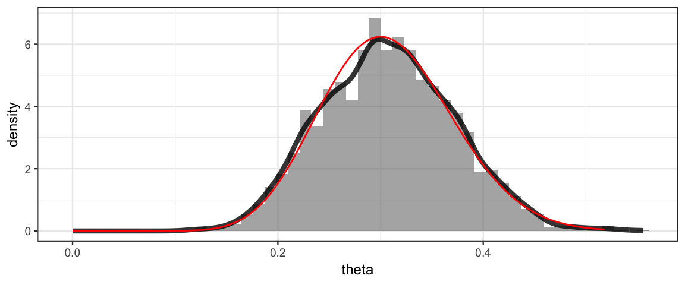
8.3.2 Side note: posterior sampling and the grid method
It is also possible to generate posterior samples when we use the grid method.
The mosaic package include the resample() function that will sample rows
of a data frame with replacement using specified probabilities
(given by the posterior, for example). Here’s how that works.
Grid <-
expand.grid(
theta = seq(0, 1, by = 0.001)
) %>%
mutate(
prior = dbeta(theta, 1, 1),
likelihood = dbinom(15, 50, theta),
posterior = prior * likelihood,
posterior = posterior / sum(posterior) / 0.001
)
Posterior <- resample(Grid, size = 5000, prob = Grid$posterior)
gf_dhistogram(~ theta, data = Posterior, bins = 50) %>%
gf_dens(~theta, size = 1.5, alpha = 0.8) %>%
gf_dist("beta", shape1 = 16, shape2 = 36, color = "red")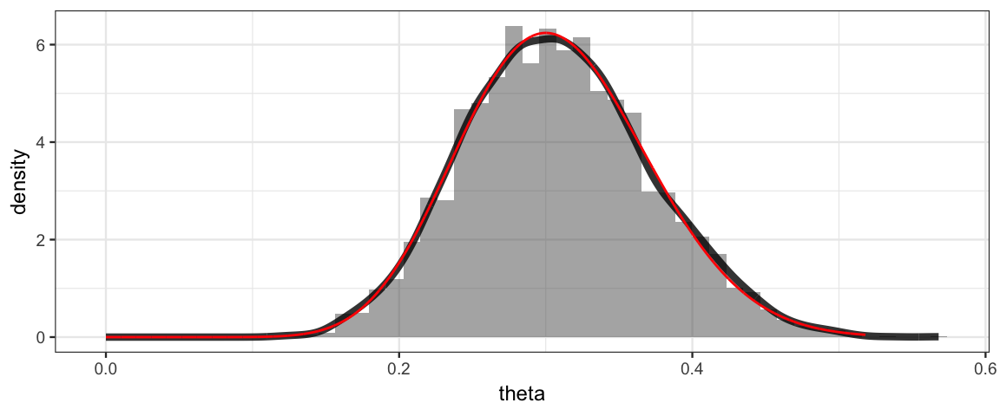
8.3.3 Using coda
The coda package provides output analysis and diagnostics for
MCMC algorithms. In order to use it, we must convert our JAGS object
into something coda recognizes.
We do with with the as.mcmc() function.
bern_mcmc <- as.mcmc(bern_jags)
plot(bern_mcmc)
Note: Kruschke uses rjags without R2jags, so he does this step using
rjags::coda.samples() instead of as.mcmc(). Both functions result
in the same thing – posterior samples in a format that coda expects, but
they have different starting points.
8.3.4 Using bayesplot
The mcmc object we extracted with as.mcmc() can be used by the
utilities in the bayesplot(). Here, for example is the bayesplot
plot of the posterior distribution for theta.
By default, a vertical line segment is drawn at the median of the posterior
distribution.
library(bayesplot)
mcmc_areas(
bern_mcmc,
pars = c("theta"), # make a plot for the theta parameter
prob = 0.90) # shade the central 90%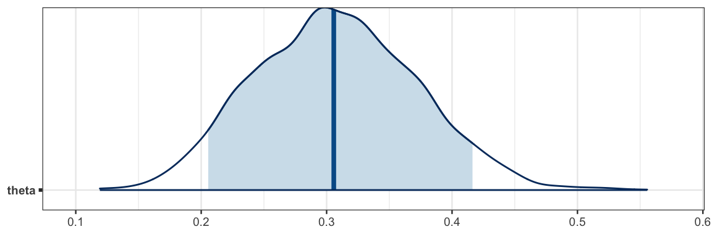
One advantage of bayesplot is that the plots use the ggplot2 system and
so interoperate well with ggformula.
mcmc_trace(bern_mcmc, pars = "theta") 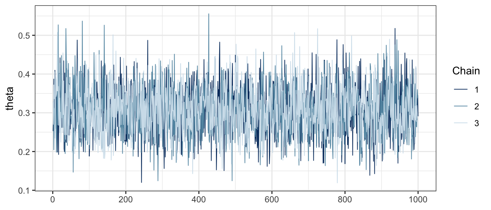
# spearate the chains using facets and modify the color scheme
mcmc_trace(bern_mcmc, pars = "theta") %>%
gf_facet_grid(Chain ~ .) %>%
gf_refine(scale_color_viridis_d())## Scale for 'colour' is already present. Adding another scale for
## 'colour', which will replace the existing scale.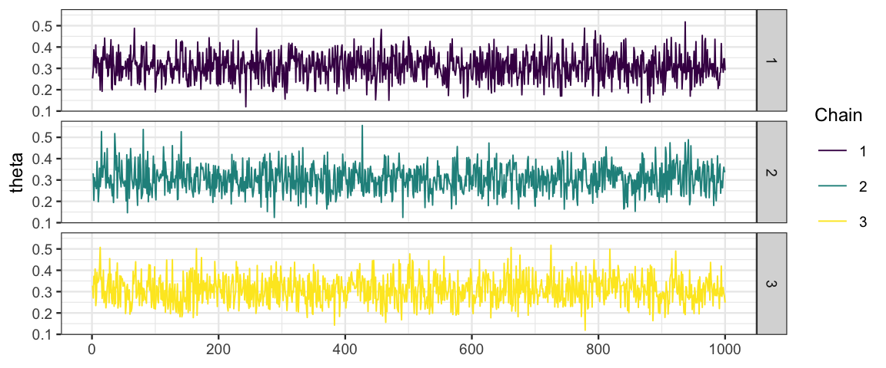
We will encounter additional plots from bayesplot as we go along.
8.3.5 Using Kruschke’s functions
I have put (modified versions of) some of functions from Kruschke’s book
into the CalvinBayes package so that you don’t have to source his files
to use them.
diag_mcmc() [diagMCMC()]
diag_mcmc(bern_mcmc, par = "theta")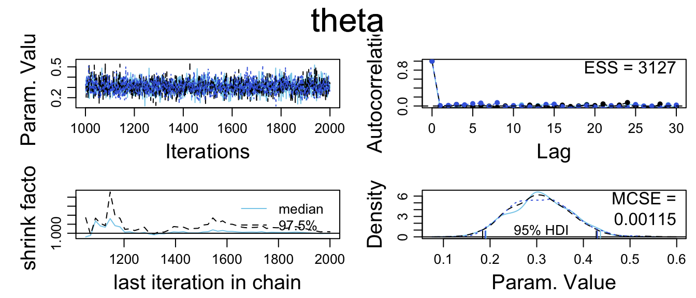
plot_post() [plotPost()]
The plot_post() function takes as its first argument a vector of posterior
sampled values for one of the parameters. We can extract such a vector
a couple different ways:
## # these produce the same output
plot_post(bern_mcmc[, "theta"], main = "theta", xlab = expression(theta))
## $posterior
## ESS mean median mode
## var1 3000 0.3075 0.3056 0.2982
##
## $hdi
## prob lo hi
## 1 0.95 0.1896 0.4342## plot_post(posterior(bern_jags)$theta, main = "theta", xlab = expression(theta))There are a number of options that allow you to add some additional
information to the plot. Specifying quietly = TRUE will turn off
the numerical display that plot_post() generates along with the plot.
Here is an example.[^08-2]
plot_post(bern_mcmc[, "theta"], main = "theta", xlab = expression(theta),
cenTend = "median", compVal = 0.5, ROPE = c(0.45, 0.55),
credMass = 0.90, quietly = TRUE)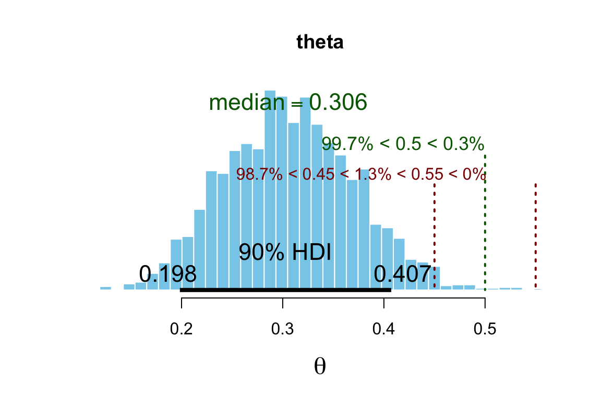
8.4 Optional arguments to jags()
8.4.1 Number and size of chains
Sometimes we want to use more or longer chains (or fewer or shorter chains
if we are doing a quick preliminary check before running longer chains later).
jags() has three arguments for this:
n.chains: number of chainsn.iter: number of iterations per chainn.burnin: number of burn in steps per chainn.thin: keep one sample pern.thin.
The default value of n.thin is set to save about 1000 values per chain.
So in the example below, we end up with only 4000 samples (1000 per chain)
rather than the 16000 you might have expected.
set.seed(76543)
bern_jags2 <-
jags(
data = list(y = z15N50$y, N = nrow(z15N50)),
model.file = bern_model,
parameters.to.save = c("theta"),
n.chains = 4, n.iter = 5000, n.burnin = 1000,
)
bern_jags2Setting n.thin = 1 will save them all.
set.seed(76543)
bern_jags2a <-
jags(
data = list(y = z15N50$y, N = nrow(z15N50)),
model.file = bern_model,
parameters.to.save = c("theta"),
n.chains = 4, n.iter = 5000, n.burnin = 1000,
n.thin = 1
)
bern_jags2a8.4.2 Starting point for chains
We can also control the starting point for the chains. Starting different chains and quite different parameter values can help
- verify that the MCMC algorithm is not overly sensitive to where we are starting from, and
- ensure that the MCMC algorithm has explored the posterior distribution sufficiently.
On the other hand, if we start a chain too far from the peak of the posterior distribution, the chain may have trouble converging.
We can provide either specific starting points for each chain or a function that generates random starting points.
gf_dist("beta", shape1 = 3, shape2 = 3)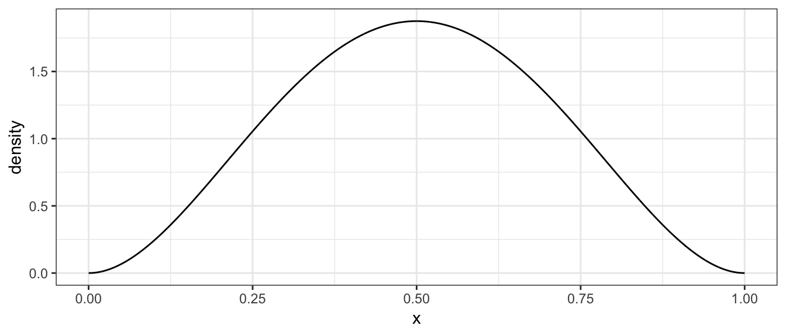
set.seed(2345)
bern_jags3 <-
jags(
data = list(y = z15N50$y, N = nrow(z15N50)),
model.file = bern_model,
parameters.to.save = c("theta"),
# start each chain by sampling from the prior
inits = function() list(theta = rbeta(1, 3, 3))
)
bern_jags4 <-
jags(
data = list(y = z15N50$y, N = nrow(z15N50)),
model.file = bern_model,
parameters.to.save = c("theta"),
# choose specific starting point for each chain
inits = list(
list(theta = 0.5), list(theta = 0.7), list(theta = 0.9)
)
)
mcmc_trace(as.mcmc(bern_jags4), pars = "theta")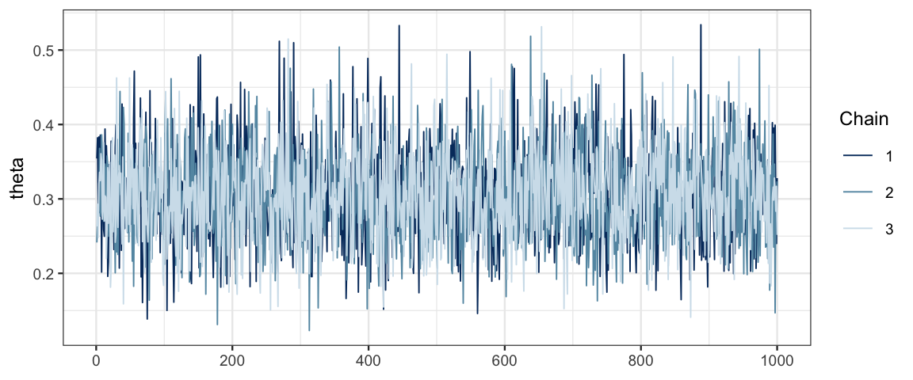
It is a good sign that our three traces look very similar and overlap a lot. This indicates that the chains are mixing well and not overly affected by their starting point.
8.4.3 Running chains in parallel
Although this model runs very quickly, others models may take considerably
longer.
We can use jags.parallel() in place of jags()
to take advantage of multiple cores to run more than one chain at a
time. jags.seed can be used to set the seed for the parallel
random number generator used. (Note: set.seed() does not work when
using jags.parallel() and jags.seed has no effect when using jags().)
library(R2jags)
bern_jags5 <-
jags.parallel(
data = list(y = z15N50$y, N = nrow(z15N50)),
model.file = bern_model,
parameters.to.save = c("theta"),
n.chains = 4, n.iter = 5000, n.burnin = 1000,
jags.seed = 12345
)8.5 Example 2: comparing two proportions
We have seen this situation before when we compared two coins. This time we’ll be a little more personal and compare two people. We will also work with a data set in a slightly different form. But the main point will be to see how we describe this familiar model to JAGS.
8.5.1 The data
Suppose we want to compare Reginald and Tony’s abilities to hit a target (with a dart, perhaps). For each attempt, we record two pieces of information: the person making the attempt (the subject) and whether the attempt succeeded (0 or 1).
Kruschke’s provides a data frame for this, but the names he uses are not good practice, so let’s remanme them to be more like what you might see in a real data set.
library(mosaic)
head(z6N8z2N7) | y | s |
|---|---|
| 1 | Reginald |
| 0 | Reginald |
| 1 | Reginald |
| 1 | Reginald |
| 1 | Reginald |
| 1 | Reginald |
# Let's do some renaming
Target <- z6N8z2N7 %>%
rename(hit = y, subject = s)
df_stats(hit ~ subject, data = Target, props, attempts = length)| subject | prop_0 | prop_1 | attempts |
|---|---|---|---|
| Reginald | 0.2500 | 0.7500 | 8 |
| Tony | 0.7143 | 0.2857 | 7 |
Reginald was more successful than Tony, but neither had very many attempts.
8.5.2 The model
Now our model is that each person has his own success rate – we have two \(\theta\)’s, one for Reginald and one for Tony.
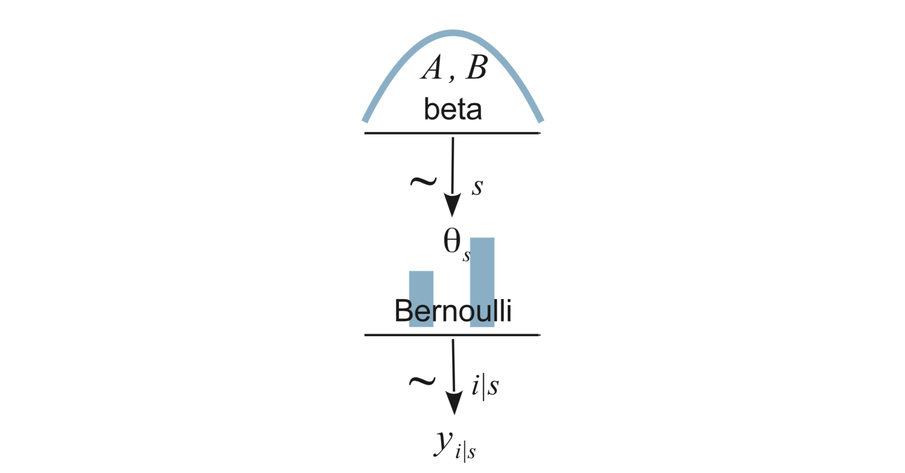
We express this as \[\begin{align*} Y_i|s &\sim {\sf Bern}(\theta_{s}) \\ \theta_s &\sim {\sf Beta}(a, b) \end{align*}\]
8.5.3 Describing the model to JAGS
bern2_model <- function() {
for (i in 1:Nobs) {
# each response is Bernoulli with the appropriate theta
hit[i] ~ dbern(theta[subject[i]])
}
for (s in 1:Nsub) {
theta[s] ~ dbeta(2, 2) # prior for each theta
}
}JAGS will also need access to four pieces of information from our data set:
- a vector of
hitvalues - a vector of
subjectvalues – coded as integers 1 and 2 (so thatsubject[i]makes sense to JAGS. (In general, JAGS is much less fluid in handling data than R is, so we often need to do some manual data conversion for JAGS.) Nobs– the total number of observationsNsub– the number of subjects
We will prepare these as a list.
TargetList <-
list(
Nobs = nrow(Target),
Nsub = 2,
hit = Target$hit,
subject = as.numeric(as.factor(Target$subject))
)
TargetList## $Nobs
## [1] 15
##
## $Nsub
## [1] 2
##
## $hit
## [1] 1 0 1 1 1 1 1 0 0 0 1 0 0 1 0
##
## $subject
## [1] 1 1 1 1 1 1 1 1 2 2 2 2 2 2 28.5.4 Fitting the model
bern2_jags <-
jags(
data = TargetList,
model = bern2_model,
parameters.to.save = "theta")8.5.5 Inspecting the results
bern2_mcmc <- as.mcmc(bern2_jags)
# Kruschke diagnostic plots
diag_mcmc(bern2_mcmc)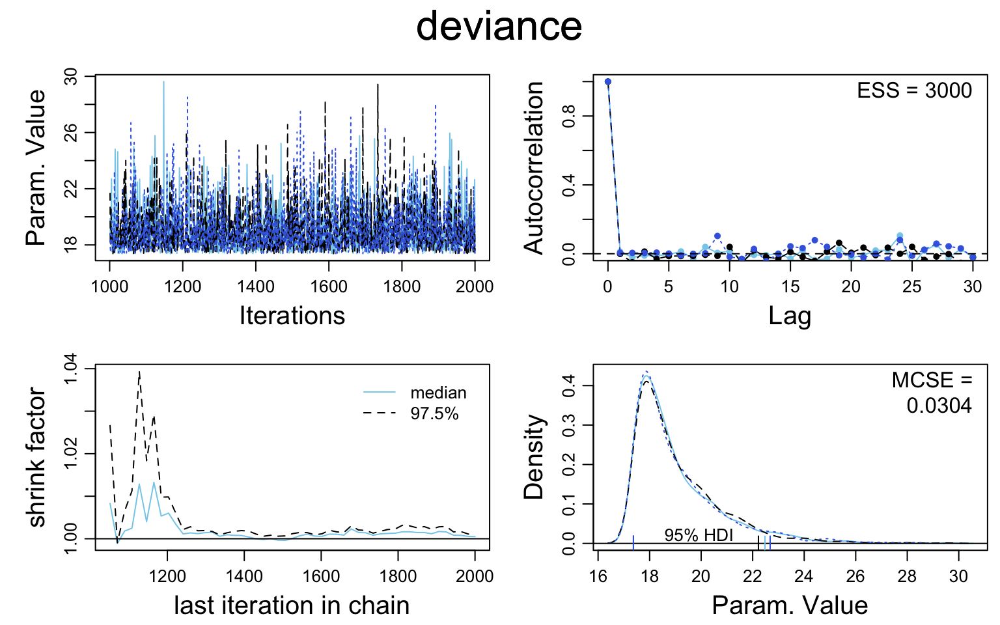
# bayesplot plots
mcmc_acf(bern2_mcmc)
mcmc_acf_bar(bern2_mcmc)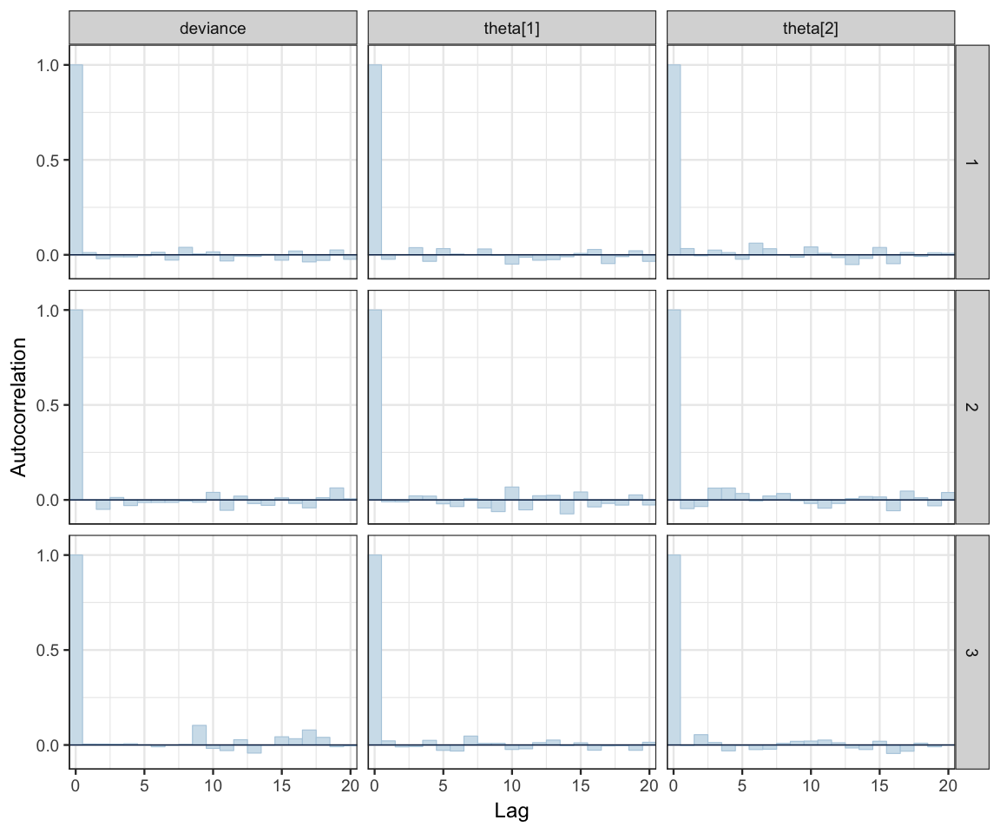
mcmc_pairs(bern2_mcmc, pars = c("theta[1]", "theta[2]"))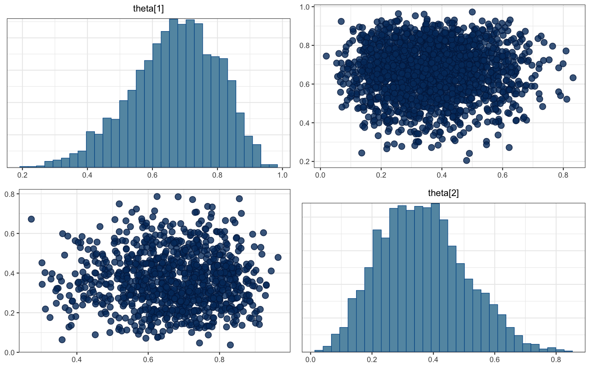
mcmc_combo(bern2_mcmc)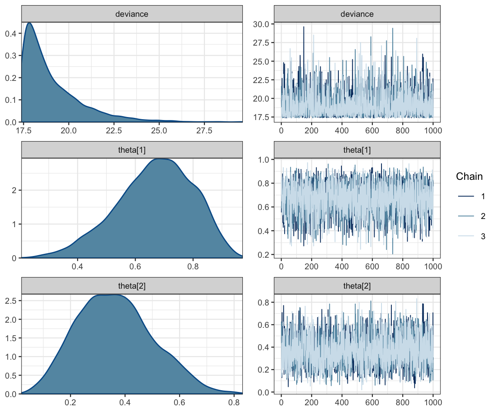
mcmc_combo(bern2_mcmc, combo = c("dens", "dens_overlay", "trace", "scatter"),
pars = c("theta[1]", "theta[2]"))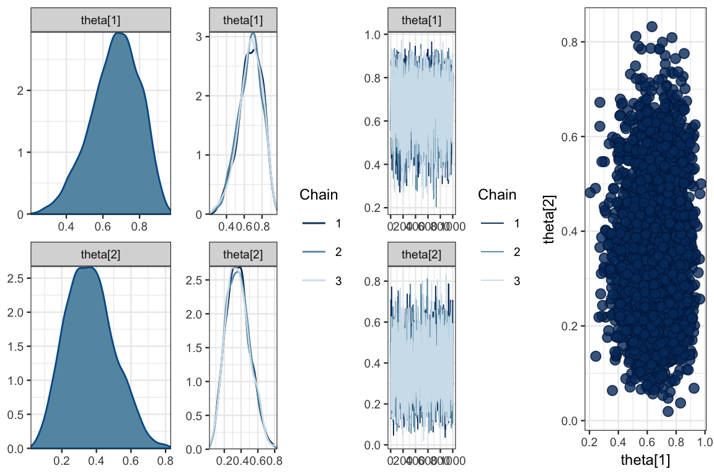
Here is a list of mcmc_ functions available:
apropos("^mcmc_")## [1] "mcmc_acf" "mcmc_acf_bar"
## [3] "mcmc_areas" "mcmc_areas_data"
## [5] "mcmc_areas_ridges" "mcmc_areas_ridges_data"
## [7] "mcmc_combo" "mcmc_dens"
## [9] "mcmc_dens_chains" "mcmc_dens_chains_data"
## [11] "mcmc_dens_overlay" "mcmc_hex"
## [13] "mcmc_hist" "mcmc_hist_by_chain"
## [15] "mcmc_intervals" "mcmc_intervals_data"
## [17] "mcmc_neff" "mcmc_neff_data"
## [19] "mcmc_neff_hist" "mcmc_nuts_acceptance"
## [21] "mcmc_nuts_divergence" "mcmc_nuts_energy"
## [23] "mcmc_nuts_stepsize" "mcmc_nuts_treedepth"
## [25] "mcmc_pairs" "mcmc_parcoord"
## [27] "mcmc_parcoord_data" "mcmc_recover_hist"
## [29] "mcmc_recover_intervals" "mcmc_recover_scatter"
## [31] "mcmc_rhat" "mcmc_rhat_data"
## [33] "mcmc_rhat_hist" "mcmc_scatter"
## [35] "mcmc_trace" "mcmc_trace_highlight"
## [37] "mcmc_violin"The functions ending in _data() return the data used to make the corresponding plot. This can be useful
if you want to display that same information in a different way or
if you just want to inspect the data to make sure you understand the plot.
8.5.6 Difference in proportions
If we are primarily interested in the difference between Reginald and Tony, we can plot the difference in their theta values.
head(posterior(bern2_jags))| deviance | theta.1 | theta.2 |
|---|---|---|
| 21.98 | 0.5002 | 0.5821 |
| 18.75 | 0.5718 | 0.3790 |
| 17.87 | 0.8429 | 0.3192 |
| 18.26 | 0.5912 | 0.2855 |
| 17.68 | 0.6661 | 0.3230 |
| 18.69 | 0.6519 | 0.4671 |
gf_density( ~(theta.1 - theta.2), data = posterior(bern2_jags))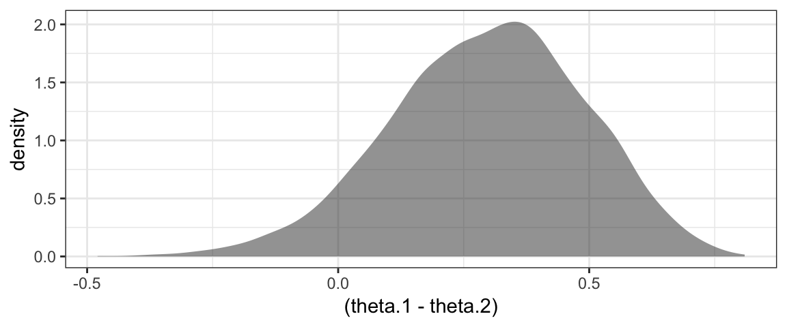
8.5.7 Sampling from the prior
To sample from the prior, we must do the following:
- remove the response variable from our data list
- change
Nobsto 0 - set
DIC = FALSEin the call tojags().
This will run the model without any data, which means the posterior will be the same as the prior.
# make a copy of our data list
TargetList0 <- list(
Nobs = 0,
Nsub = 2,
subject = as.numeric(as.factor(Target$subject))
)
bern2_jags0 <-
jags(
data = TargetList0,
model.file = bern2_model,
parameters.to.save = c("theta"),
n.chains = 2, n.iter = 5000, n.burnin = 1000,
DIC = FALSE)## Compiling model graph
## Resolving undeclared variables
## Allocating nodes
## Graph information:
## Observed stochastic nodes: 0
## Unobserved stochastic nodes: 2
## Total graph size: 20
##
## Initializing model8.5.7.1 Note about : in JAGS and in R
From the JAGS documentation:
The sequence operator
:can only produce increasing sequences. If n < m thenm:nproduces a vector of length zero and when this is used in a for loop index expression the contents of loop inside the curly brackets are skipped. Note that this behavior is different from the sequence operator in R, wherem:nwill produce a decreasing sequence ifn < m.
So in our JAGS model, 1:0 correctly represents no data (and no trips through the for loop).
8.5.7.2 What good is it to generate samples from the prior?
Our model set priors for \(\theta_1\) and \(\theta_2\), but this implies a distribution for \(\theta_1 - \theta_2\), and we might like to see what that distribution looks like.
gf_density( ~(theta.1 - theta.2), data = posterior(bern2_jags0))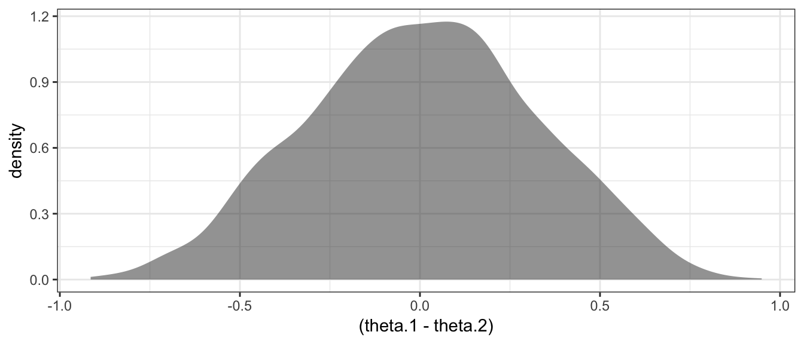
8.6 Exercises
Sampling from priors. You want to know who is the better free throw shooter, Alice or Bob. You decide to have each shoot a number of shots and record their makes and misses. You are primarily interested in the difference between their free throw shooting proportions (\(\theta_2 - \theta_1\)), and you are curious to know how your choice of priors for \(\theta_1\) and \(\theta_2\) affects the prior for \(\theta_2 - \theta_1\). For each situation below, use JAGS to sample from the prior distribution for \(\theta_2 - \theta_1\) and create a density plot. (In each case, assume the priors for \(\theta_1\) and \(\theta_2\) are independent.)
Both priors are uniform. What distribution do you think the prior for \(\theta_2 - \theta_1\) is?
Both priors are \({\sf Beta}(0.2, 0.2)\). Explain why the prior for \(\theta_2 - \theta_1\) looks the way it does.
Hint: Don’t forget to set
DIC = FALSEwhen sampling from the prior.Now suppose that Alice makes 25 out of 30 shots and Bob makes 18 out of 32. Is this enough evidence to conclude that Alice is the better shooter? Do this two ways. In each case, use a \({\sf Beta}(4, 2)\) prior for both \(\theta_1\) and \(\theta_2\).
Create data and use a model like the one used elsewhere in this chapter. [Hint:
rep()is handy for creating a bunch of values that are the same.]Instead of using
dbern(), usedbin()(JAGS version of the binomial distribution). This should allow you to get by with simpler data that consists only of the numbers 25, 30, 18, and 32. Note: the order of arguments fordbin()is probability first, then number of trials. This is reversed from the order in R.
In the previous problem, what does this prior say about the beliefs about Alice and Bob’s shooting before gathering data?
Let’s think about Alice and Bob some more. We don’t know how to do this yet, but explain why if you knew very little about basketball, you might like to have a prior for \(\theta_1\) and \(\theta_2\) that was not indpendent. How might the priors for \(\theta_1\) and \(\theta_2\) be related?
Consider the model below.
Create a plot of the prior distribution of
theat1andtheta2. A scatter plot with overlayed density plot works well. How does this prior compare to the priors in problem 1. (Hint: Don’t forget to useDIC = FALSEwhen sampling from the prior.)Fit the model to the Alice and Bob data. How does this choice of prior change things?
diff_model <- function() { z1 ~ dbin(theta1, n1) z2 ~ dbin(theta2, n2) theta2 <- theta1 + delta theta1 ~ dbeta(4, 2) delta ~ dnorm(0, 400) # Normal with mean 0 and sd = 0.05 } diff_jags <- jags.parallel( model = diff_model, data = list(n1 = 30, z1 = 25, n2 = 32, z2 = 18), parameters.to.save = c("theta1", "theta2", "delta"), n.iter = 5000, n.chains = 4 )Redo problem 5 using the grid method.
This is a bit of a trick that R2jags uses. The function created is never run. The code is inspected and taken as the description of the model. If you were to run the funtion, all it would do is create R formulas.↩